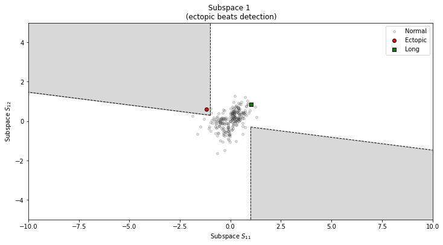
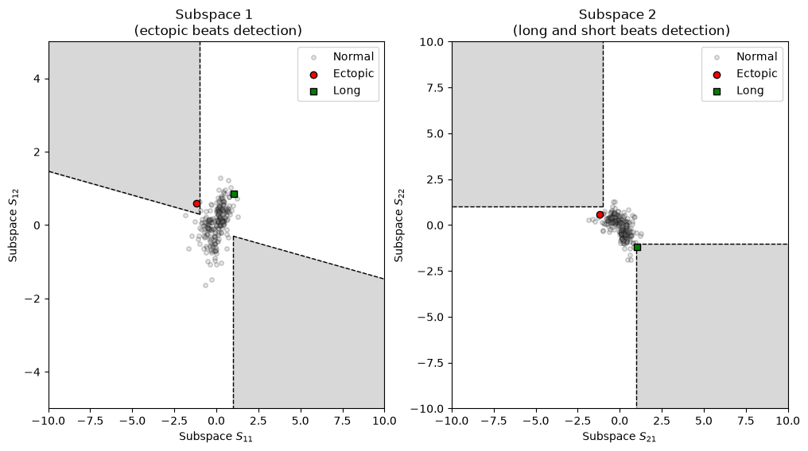

systole.plots.plot_subspaces#
- systole.plots.plot_subspaces(rr: List[float] | ndarray | None = None, artefacts: Dict[str, ndarray] | None = None, input_type: str = 'rr_s', figsize: Tuple[float, float] | int | None = None, ax: Tuple | List | None = None, backend: str = 'matplotlib') figure | Axes[source]#
Visualization of short, long, extra, missed and ectopic beats detection.
The artefact detection is based on the method described in [1].
- Parameters:
- rr
R-R interval time-series, peaks or peaks index vectors. The default expected vector is R-R intervals in milliseconds. Other data format can be provided by specifying the “input_type” (can be “rr_s”, “peaks” or “peaks_idx”).
- artefacts
A dictionary containing the infos abount the artefacts detected using the
systole.detection.rr_artefacts()function. This parameter is optional, but if provided the data provided in rr will be ignored.- input_type
The type of input vector. Default is “peaks” (a boolean vector where 1 represents the occurrence of R waves or systolic peaks). Can also be “rr_s” or “rr_ms” for vectors of RR intervals, or interbeat intervals (IBI), expressed in seconds or milliseconds (respectively).
- figsize
Figure size. Default is (12, 6) for matplotlib backend, and the height is 600 when using bokeh backend.
- ax
Where to draw the plot. Default is None (create a new figure). Otherwise, a tuple of list of Matplotlib axes should be provided. Only applies if backend=”matplotlib”.
- backend
Select plotting backend {“matplotlib”, “bokeh”}. Defaults to “matplotlib”.
- Returns:
- plot
The matplotlib axes, or the boken figure containing the plot.
See also
plot_events,plot_ectopic,plot_shortlong,plot_subspaces,plot_frequencyplot_timedomain,plot_nonlinear
References
[1]Lipponen, J. A., & Tarvainen, M. P. (2019). A robust algorithm for heart rate variability time series artefact correction using novel beat classification. Journal of Medical Engineering & Technology, 43(3), 173–181. https://doi.org/10.1080/03091902.2019.1640306
Examples
Visualizing artefacts from RR time series.
from systole import import_rr from systole.plots import plot_subspaces import matplotlib.pyplot as plt # Import PPG recording as numpy array rr = import_rr().rr.to_numpy() _, axs = plt.subplots(ncols=2, figsize=(12, 6)) plot_subspaces(rr, ax=axs)
(<Axes: title={'center': 'Subspace 1 \n (ectopic beats detection)'}, xlabel='Subspace $S_{11}$', ylabel='Subspace $S_{12}$'>, <Axes: title={'center': 'Subspace 2 \n (long and short beats detection)'}, xlabel='Subspace $S_{21}$', ylabel='Subspace $S_{22}$'>)
Visualizing artefacts from the artefact dictionary.
from systole.detection import rr_artefacts # Use the rr_artefacts function to short/long and extra/missed intervals artefacts = rr_artefacts(rr) _, axs = plt.subplots(ncols=2, figsize=(12, 6)) plot_subspaces(artefacts=artefacts, ax=axs)
(<Axes: title={'center': 'Subspace 1 \n (ectopic beats detection)'}, xlabel='Subspace $S_{11}$', ylabel='Subspace $S_{12}$'>, <Axes: title={'center': 'Subspace 2 \n (long and short beats detection)'}, xlabel='Subspace $S_{21}$', ylabel='Subspace $S_{22}$'>)
Using Bokeh as plotting backend.